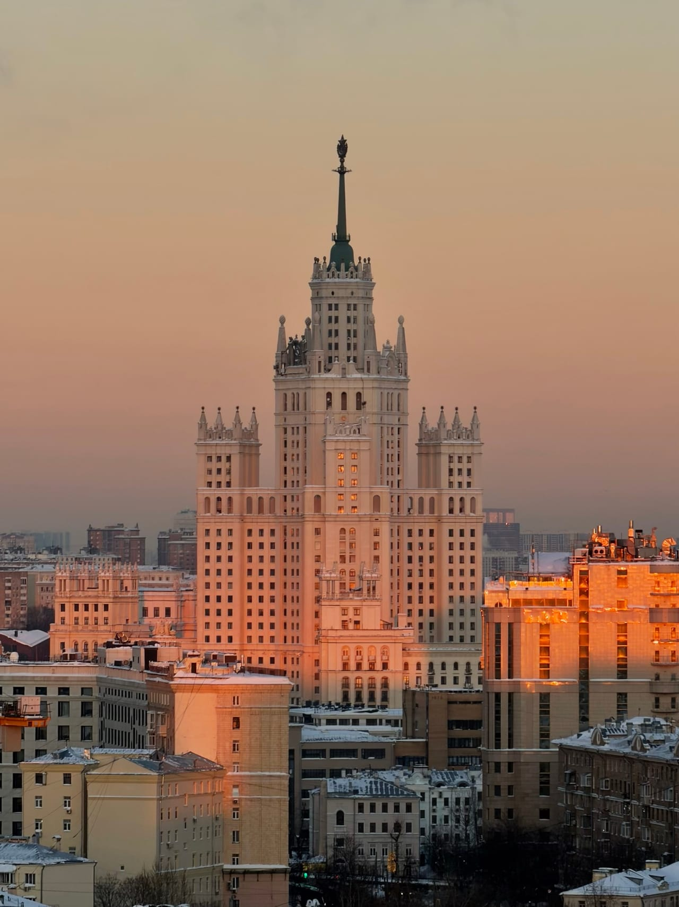

Честный гид
Как попасть на крышу в Москве
Короткий ответ: не искать открытые двери, а подняться организованно — с сопровождающим, по проверенному маршруту и без риска. Рассказываем, как это устроено.
Почему не стоит искать открытую крышу самому
Случайно найденная открытая дверь на чердак — это чужая закрытая территория, сигнализации, охрана и покрытия, не рассчитанные на прогулки. Такой подъём небезопасен и может обернуться проблемами с законом. А ещё это почти всегда разочарование: интересные видовые точки просто так не открыты.
Как попасть легально
Организованная прогулка решает всё сразу: вы приходите к назначенному времени, поднимаетесь с сопровождающим по проверенному маршруту, слушаете короткий инструктаж и спокойно проводите час над городом — фотографируете, смотрите закат, разговариваете. Точный адрес мы сообщаем после подтверждения записи.
Что взять с собой
- удобную нескользящую обувь;
- тёплый слой одежды — вечером на высоте прохладнее;
- телефон или камеру для съёмки.
Какие крыши доступны
В каталоге — локации у метро Фили, Киевская, Курская, Марксистская, Новокузнецкая, Римская, Таганская и Шелепиха: виды на Москва-Сити, сталинские высотки, Кремль и Москва-реку. У каждой крыши есть фотографии, чтобы выбрать вид заранее.
Сколько это стоит
Ориентир — от 2000 рублей за человека за часовую прогулку. Если площадка свободна, прогулку можно продлить ещё на час за 500 рублей с человека. Актуальные цены по конкретным крышам показывает Telegram-бот.
FAQ
Частые вопросы
Можно ли попасть на крышу самостоятельно?
Искать открытые чердаки небезопасно и может обернуться проблемами с законом. Надёжный способ — организованная прогулка с сопровождающим.
Сколько стоит подъём на крышу?
Ориентир — от 2000 руб. за человека за 1 час. Продление при возможности — 500 руб. с человека за час.
Где именно находится крыша?
Точный адрес не публикуется — сообщаем его после подтверждения записи. Виды с каждой локации можно посмотреть в каталоге.
Как записаться?
Оставьте заявку на сайте или напишите в Telegram-бот — подтвердим свободное время и пришлём детали.
Над городом